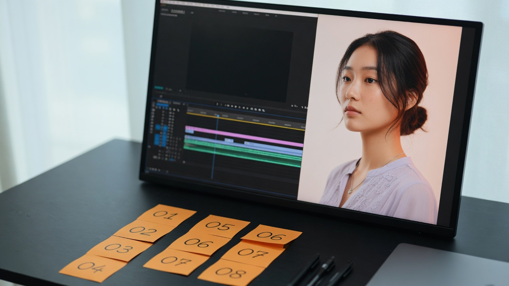
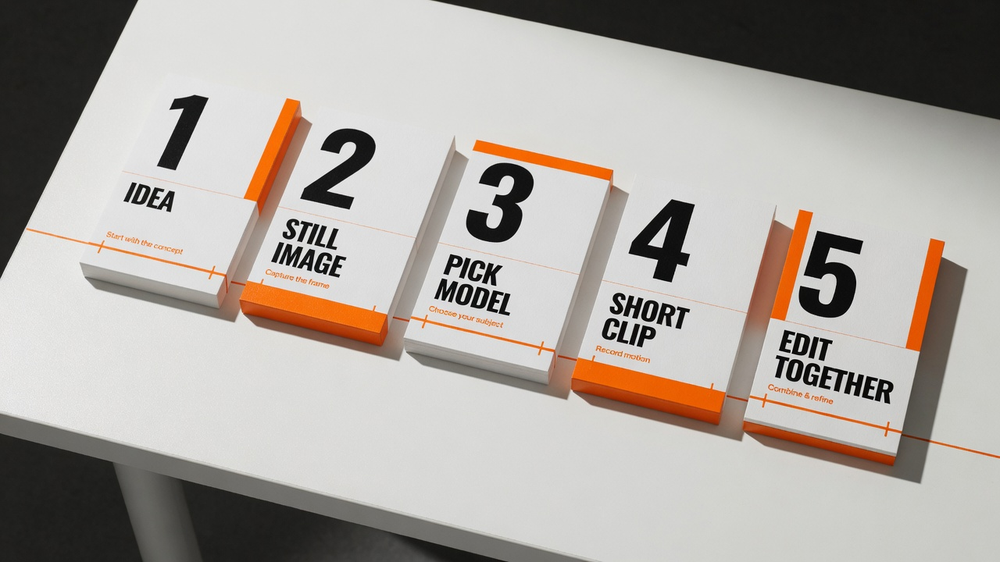
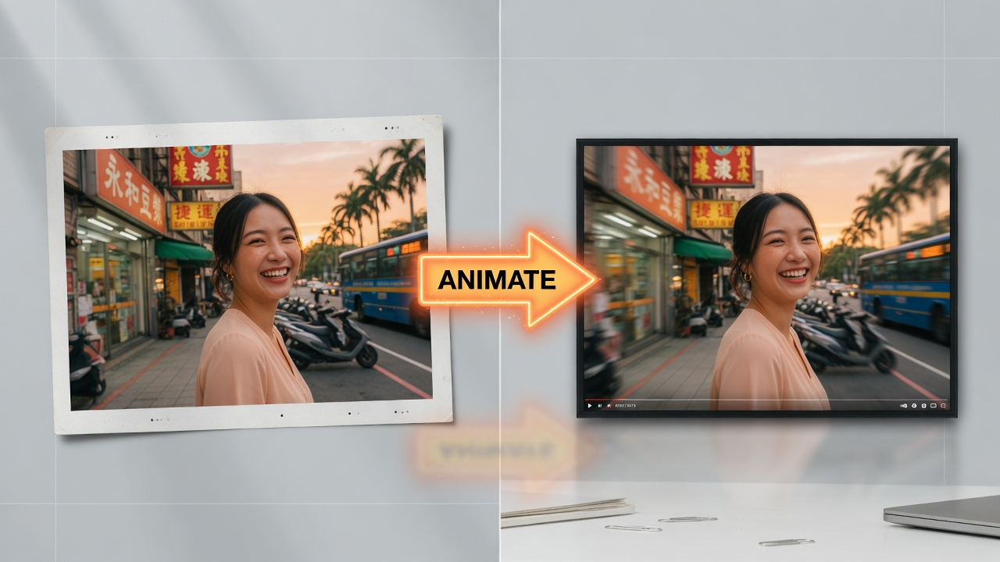
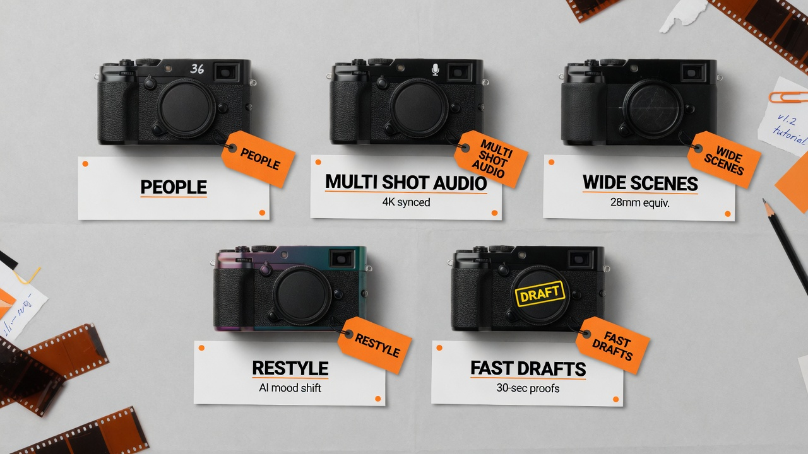
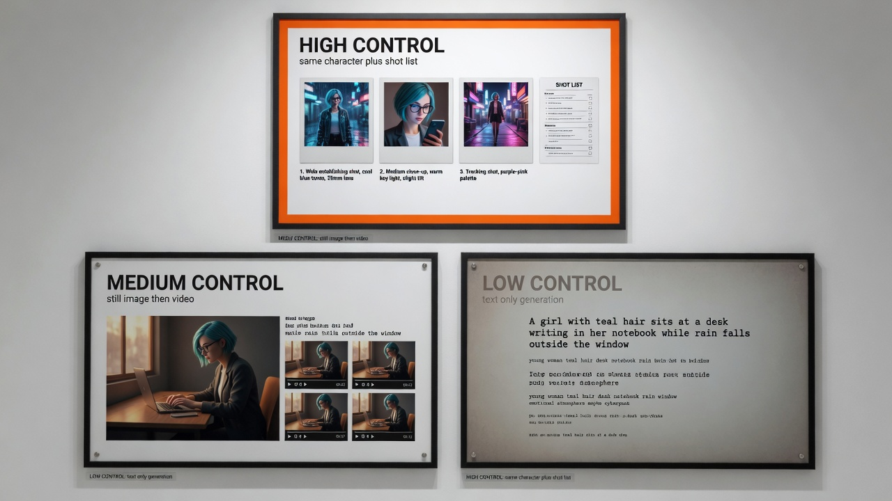
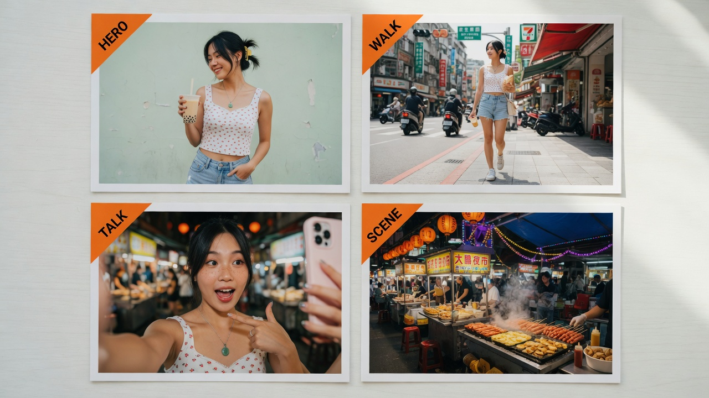
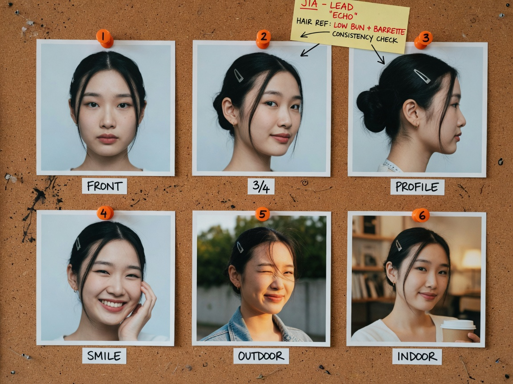
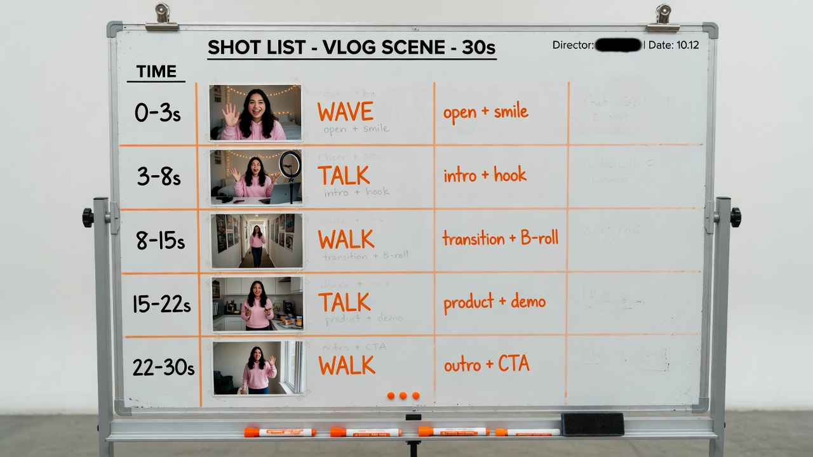
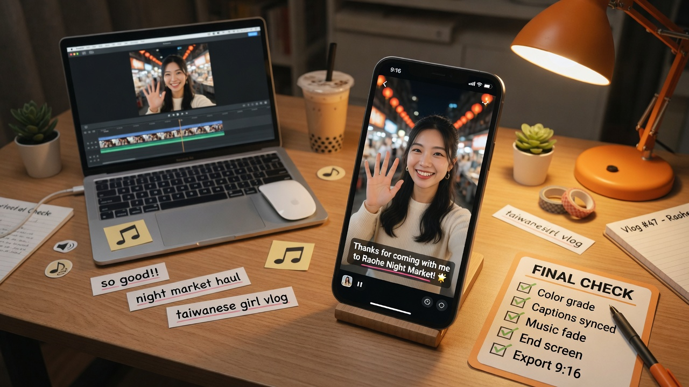

Text → Video
Describe a shot. Get a short clip. Best for mood, empty scenery, concepts.
Fast concepts
Professional 101 · plain English · expandable depth
You do not need film school. You need short clips, a clear shot list, and the right model for each job. This page starts simple. Open any section when you want the full step-by-step.

One workspace. Many AI video models. Extra director tools on top.
Explain like I am five
Higgsfield is not one magic model. It is a video mall: Kling, Seedance, Veo, Wan, MiniMax, and more live under one login. You pick the tool for the shot. Then you stack Higgsfield’s own director tools: camera control, character lock, mouth sync, motion copy.

Six paths. Learn these and you can ignore half the interface.

Describe a shot. Get a short clip. Best for mood, empty scenery, concepts.
Fast concepts
Lock the face and frame first, then animate. Your default for people.
Vlog default
Upload a reference performance. Copy pace, gesture, body language.
Action lock
Pin start and end stills so multi-shot stitching stays coherent.
Continuity
Pick camera body, lens, focal length, multi-axis moves. Film language, not luck.
Director mode
Train a reusable character. Keep the face stable. Sync talking heads.
Series host
Subject + action + camera + light. Example: “Medium close-up, young Taiwanese woman waves at camera, handheld phone feel, soft daylight.”
Face sharp, outfit fixed, background readable. Reject plastic skin and weird hands before you animate.
Start at 5–8 seconds. One gesture. No multitasking.
People talking or walking → Kling. Wide outdoor mood → Veo. Multi-shot with sound → Seedance. Drafts → MiniMax.
Use CapCut, Premiere, or DaVinci Resolve. Add captions, background music, logo sting.
Do not use the expensive model for everything. Match the job.

| Model | Best for | Skip when… | Cost vibe |
|---|---|---|---|
| Kling 3.0 | People, multi-shot story, voice binding, character work | You only need a quick abstract draft | Cheap daily driver |
| Seedance 2.0 | Finished multi-shot sequences with built-in sound | You are still exploring concepts | Spend on finals |
| Veo 3.1 | Outdoor scale, weather, atmosphere, wide plates | Tight talking-head close-ups | Premium plate |
| Wan 2.7 | Restyle or “reshoot” from a reference clip; product physics | Pure text-only generation with no reference | Mid, reference-heavy |
| MiniMax Hailuo | Fast short drafts, style tests, daily volume | You need directed multi-shot cinema | Draft machine |
| Cinema Studio | Lens language, multi-axis moves, film look control | You just need a raw idea dump | Craft layer |
Use the strengths. Design around the limits. No fantasy.

Stay in conversation. Let your assistant submit jobs and return file links.
Dumb version
Model Context Protocol (the open plug standard many assistants use) connects Higgsfield into Claude, OpenCode, Cursor, and similar tools. Skills are reusable recipes (generate, soul character, product shoot). You talk. The assistant submits jobs and waits.
https://mcp.higgsfield.ai/mcp
# Claude Code example
claude mcp add --transport http --scope user \
higgsfield https://mcp.higgsfield.ai/mcpnpx skills add higgsfield-ai/skills
higgsfield auth loginAlso useful: reverse a reference video into prompts, product page to launch clip, long video to vertical shorts.
Use five lines every time: Model · Composition · Subject · Lighting · Aesthetic.
Model: Kling 3.0
Composition: medium close-up, subject center-left, shallow focus
Subject: Taiwanese woman, mid-20s, white linen shirt, natural makeup
Lighting: golden hour street light, soft rim
Aesthetic: handheld phone vlog, photoreal, vertical 9:16, 6 seconds
Action: small smile, slight nod, hair moves in breezeOpenCode config field names differ by client. After adding, fully restart the app and complete sign-in on first tool call.
Still first. Character second. One action per clip. Cheap drafts, expensive finals.

Handheld phone-style vlog, medium close-up,
Taiwanese young woman in casual summer outfit,
walking through a Taipei night market at golden hour,
natural smile, slight camera shake, shallow focus,
soft ambient city noise, vertical 9:16, photorealistic,
single simple action only: looks at camera and waves once80% prep. 20% generate. This checklist stops face drift and credit waste.

Write these before any generate button:
Use 12–20 sharp photos of one person, same era, clear face, no heavy filters. Train Soul. Run 10 still tests across scenes before video.

| Time | Shot | Action | Model |
|---|---|---|---|
| 0–3s | Wide | Taipei establish | Veo / MiniMax |
| 3–8s | Medium close-up | Walk in + wave | Kling image→video |
| 8–15s | Close-up | One intro line | Kling + mouth sync |
| 15–22s | Medium | Market walk scenery | Seedance / Kling |
| 22–30s | Close-up / card | Call to action + end card | Editor |
Hero half-body, walk full body, talk close-up, 2–3 scenery frames. Only animate approved frames.
Never put every shot on the most expensive model. People close-ups earn the premium credits.
Spoken line 1: “Hey, I’m Maya — Taipei food walks, every week.”
Chinese caption idea:「嗨，我是 Maya，每週帶你走台北小吃。」
Spoken line 2: “Tonight: night market classics in under two minutes.”
End call to action: “Follow for the next stop.”
Keep spoken lines short. AI mouths fail on monologues.
Minimum path. No perfectionism. Re-render only the failed shot.

Who she is, what she wears, where we are. Done in five minutes.
Optional: train Soul if this becomes a series.
One action each. Times add to about 30 seconds.
Kling for people. Cheap model for empty scenery.
Captions, light color grade, background music, end card. Publish.
Print this in your brain.
Still image → Kling image-to-video → CapCut
Soul → still family → Kling/Seedance → fixed color look + captions
Sign in → five-line prompts → wait → package links
MiniMax draft → Kling people → Veo only for hero wide